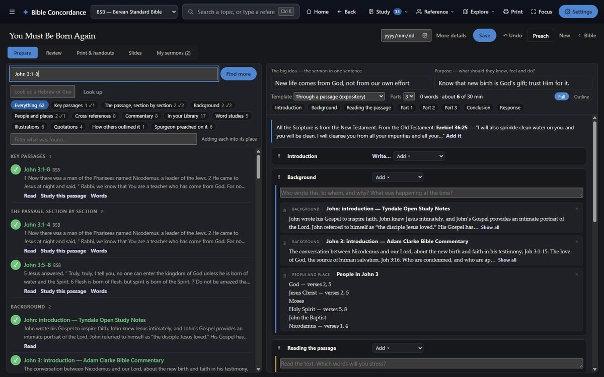
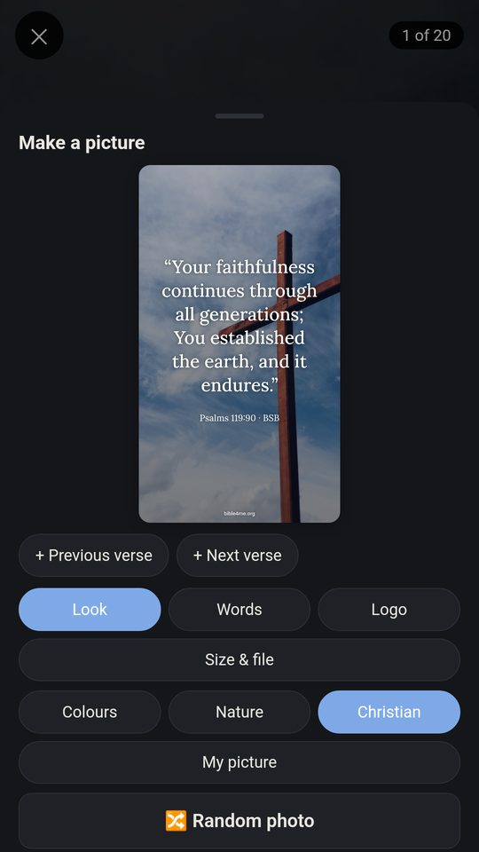

A free sermon builder for pastors and preachers
Build a sermon from Scripture to slides, plan the whole Sunday service and present it on the projector. Free on Windows, with no account and no adverts.
From the passage to the pulpit
The sermon builder walks you through it in steps: choose a passage, or the coming Sunday's readings; shape the storyline and name your points; gather commentaries, the original words, other Scripture, stories and quotes; plan the close; and write it out. Everything you need to study sits beside the sermon you are writing.
- Seven commentaries, the Hebrew and Greek, cross-references, people and places and maps, all inside the app and all offline.
- Slides from your sermon: present with a presenter view, or save as PowerPoint or ProPresenter.
- Sunday service: notices from ready-made examples, songs saved once for every Sunday, slides with Scripture, pictures, video and countdowns, and a printed bulletin.
- Songs: the title, writer and CCLI number can go on each slide when you switch it on, and you can bring songs in from OpenSong.
- Follow along and stage view: people on your church Wi-Fi can read the words on their own phones, and a tablet can show you the next slide, your notes and a timer. Both are off until you switch them on, and nothing leaves your network.
- Content Factory: verse pictures and short videos to share, a whole week at once.


Free backgrounds for Sunday
There is a free pack of five moving backgrounds and eight script headings for your slides on the Download page, free for churches and homes, with no credit needed.
Free, and yours
It is free, with no account and no adverts, and what you write stays on your own computer. The Windows app is in the Microsoft Store.
Questions
Is the sermon builder really free?
Does it need the internet?
Can I use it for a church service on a projector?
Is there a phone version?
Try it, it is free
No account, no adverts, and it works without the internet.
Download for Windows or Android